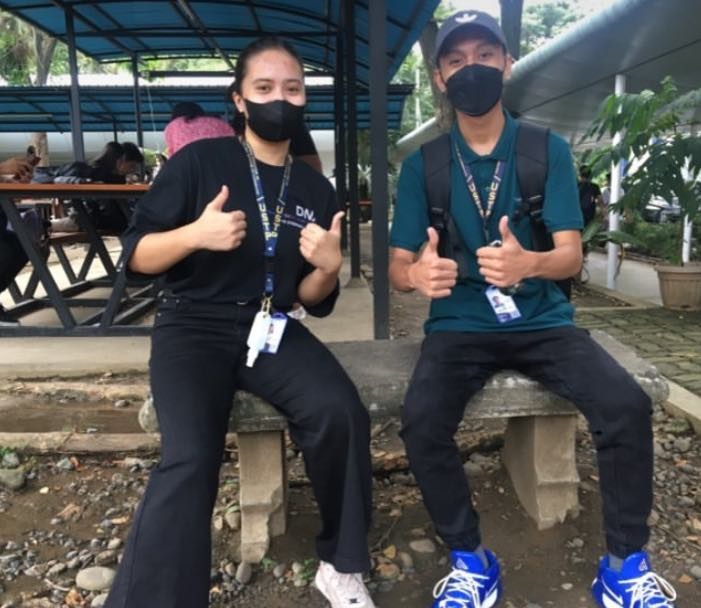

City Commutes: When Public Transport becomes a Test Patience
By: Charlene R. Lusterio
Date: 10/08/24
During an interview with Reizmarl Rojo, a 3rd-year BSET-ES student at the University of Science and Technology of Southern Philippines (USTP), he shares his experiences of commuting daily using public transport. Living in a busy urban area, Reizmarl navigates the challenges of traffic congestion and overcrowded public vehicles, especially during peak hours. These issues not only disrupt his daily schedule but also impact his studies and overall well-being. He mentions how unpredictable delays, coupled with a lack of proper transport management, turn commuting into a test of patience.
Reizmarl often faces long waiting times for public transportation, particularly during the rainy season, when weather conditions worsen the situation by further delaying travel and crowding vehicles. The mental and emotional strain of these commuting challenges takes a toll on his productivity and energy, leaving him exhausted before even arriving at school. Implementing improved public transport systems and real-time travel information could help alleviate these frustrations, giving commuters like Reizmarl more control over their travel schedules and reducing the stress associated with daily commuting.
In conclusion, Reizmarl’s experiences highlight the need for effective urban transportation solutions that address traffic management, vehicle overcrowding, and the unpredictable nature of public transport schedules. By addressing these challenges, commuters can experience a more efficient and less stressful journey, ultimately improving their daily routines and quality of life.